Android · Build 76 · 72,1 MB · 26 de septiembre de 2026
¿Estás en la compu? Escanea el código con la cámara de tu celular y la descarga empieza ahí.
Proyecto académico de alumnos. ULima++ no es una app oficial de la Universidad de Lima.
Ulises¡Craa! Hola, soy Ulises. Te muestro la app, pantalla por pantalla.
Malla › Vista mapa
Tu avance real, curso por curso.
En tu malla, el botón «Vista mapa» abre el mapa de toda la carrera. Arriba suma tu avance y cada curso se pinta según su estado, en verde los que ya aprobaste, en ámbar los que llevas este ciclo y en azul los que ya tienes disponibles.
UlisesLos colores te dicen qué aprobaste, qué cursas y qué ya puedes llevar.
9:41
Pestaña Horario
Tus clases y lo que haces fuera de ellas.
El horario del día trae tus clases con su aula y marca tus evaluaciones. Arriba ves cuántas horas suman tus bloques en la semana. Si uno se cruza con una clase, la app te avisa al guardarlo, y cada bloque propio, como las prácticas, aparece en su franja del día.
UlisesTus prácticas van en tu horario, y si un bloque choca con una clase, la app te avisa.
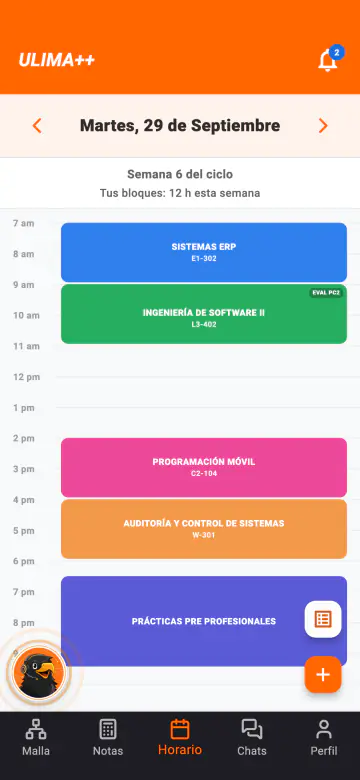
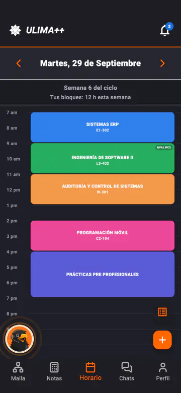
9:41
Horario › Mis bloques
Todos tus bloques en una lista.
En «Mis bloques» ves cada bloque con sus días, su hora y sus fechas, y lo editas o lo borras cuando cambia tu semana. Si un día no vas, lo tocas en el horario y cancelas solo ese día, que queda marcado como cancelado.
Ulises¿Un día no puedes ir? Cancelas solo ese día y el bloque sigue.
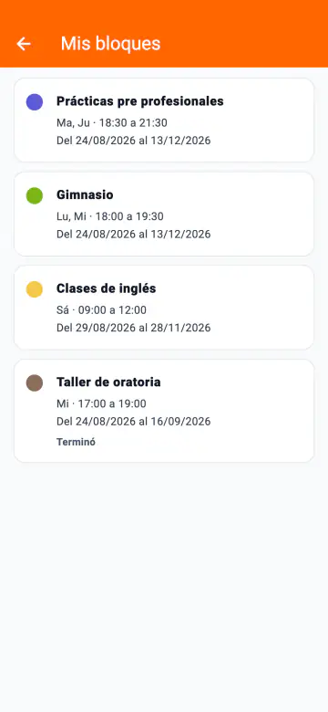
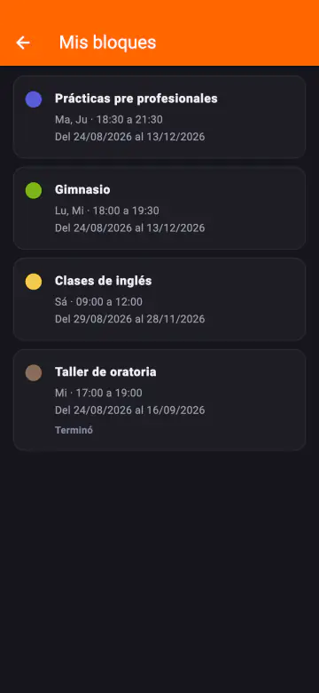
9:41
Pestaña Notas
Tu promedio, calculado al instante.
En la calculadora, las notas que ya publicó la ULima llevan la marca «ULima» y cuentan en tu promedio. La fila «Notas oficiales» dice cuándo se leyeron. Ahí las actualizas y ves cada evaluación con su semana y su peso. Para lo que falta, eliges la evaluación del sílabo, con su peso, anotas la nota que esperas y ves tu promedio al momento.
UlisesTus notas de la ULima ya cuentan en tu promedio. Anota la que esperas.
9:41
Buzón de alertas
Un aviso a tiempo, antes del susto.
ULima++ te avisa cuando tu promedio de un curso entra en riesgo y cuando se te juntan varias evaluaciones en la misma semana.
UlisesSi tu promedio peligra o se juntan evaluaciones, te llega un aviso.
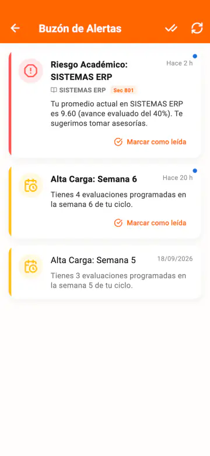
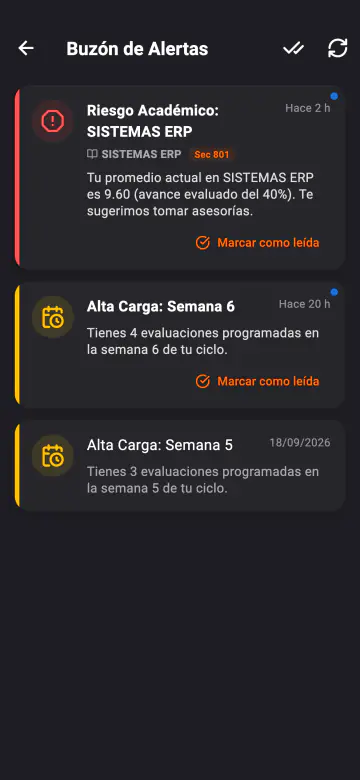
9:41
Perfil › Mi récord académico
Tu récord, traído de miUlima.
Sincronizas con el portal una vez y tienes a la mano tu promedio ponderado acumulado y las notas de cada ciclo, curso por curso.
UlisesTu promedio ponderado acumulado y las notas de cada ciclo, traídos de miUlima.
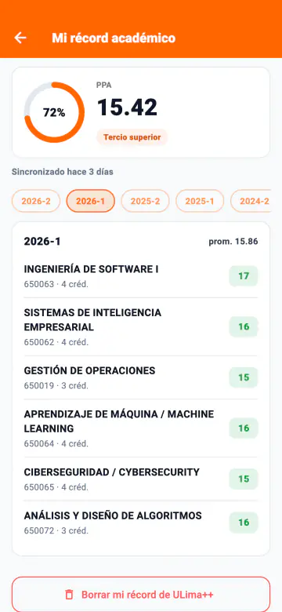
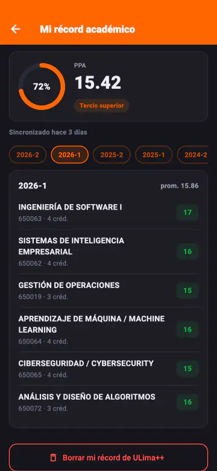
9:41
Dentro de cada curso
Anuncios y asesorías de tu sección.
Cada curso reúne tu asistencia, que actualizas desde la ULima, los anuncios que publican tus delegados, las asesorías y los contactos de la sección. Si vas a una asesoría, la confirmas ahí mismo, y el botón de arriba te lleva al chat del curso.
Ulises¿Vas a la asesoría? Confírmalo con «Asistiré». Arriba tienes el chat del curso.
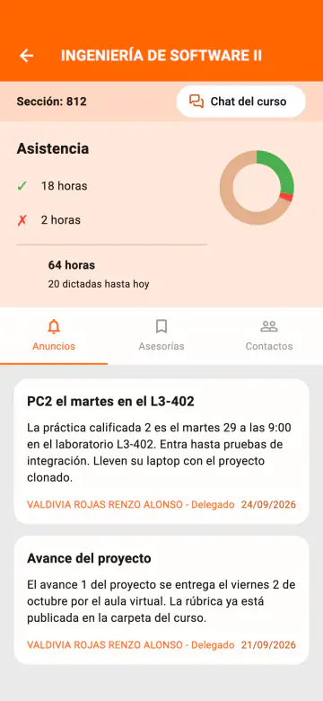
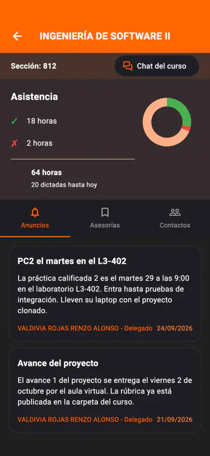
9:41
Chats › Tu sección
El chat de tu sección, sin pasar tu número.
Cada sección tiene su propio chat, con sus alumnos, sus delegados y su profesor. Si te equivocas, borras tu mensaje para todos y el chat muestra que lo eliminaste. Y si alguien manda «67», el chat entero se inclina.
UlisesHablas con tu sección, tus delegados y tu profe sin pasar tu número.Si alguien manda «67», el chat se inclina y aparece «SIX SEVEN!!!».
9:41
Ulises, el asistente
Pregúntale a Ulises.
Toca al cuervo de la esquina y se abre ULimaBot, el asistente con inteligencia artificial que te responde sobre tu horario, tus evaluaciones, los delegados de tus secciones y tus bloques, y hasta te sugiere cuándo repasar.
NuevoEl test de especialidad, conversando con Ulises.
UlisesEse soy yo. Pregúntame por tu horario, tus evaluaciones o tus bloques.
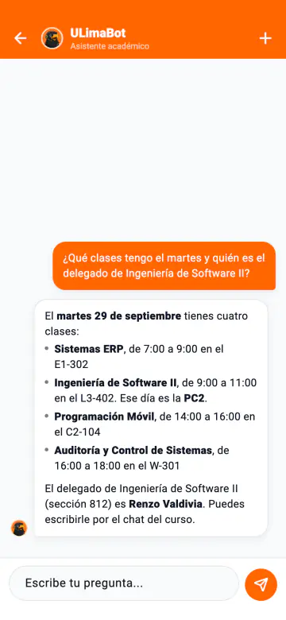
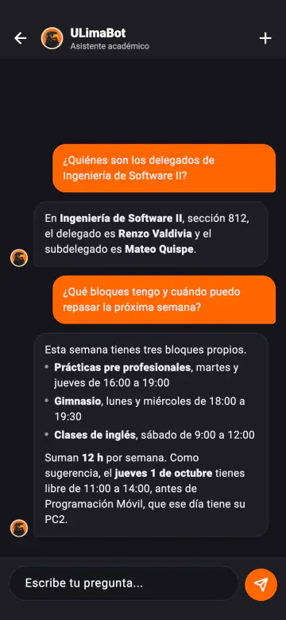
9:41
Instalación · solo Android por ahora
1Paso 1. Descarga el APK.
Abre esta página en tu celular Android y toca el botón. El enlace siempre baja la última versión.
Android · Build 76 · 72,1 MB · 26 de septiembre de 2026
UlisesPor ahora es solo para Android, y siempre descargas la última versión.
9:41
Instalación
2Paso 2. Permite la instalación.
Al abrir el archivo, Android te pide permiso la primera vez. Entra a la configuración que te muestra y activa «Permitir desde esta fuente» para el navegador que usaste.
UlisesEs normal que Android pida este permiso la primera vez.
9:41
Instalación
3Paso 3. Instala y entra.
Vuelve al archivo, toca «Instalar» y abre ULima++. Ulises te recibe junto al logo y te pregunta si ya usas la app. Con «Sí, entrar», entras con Google o, en la misma conversación, le das tu códigoy tu contraseña. Con «Soy nuevo», ahí mismo creas tu cuenta.
Para actualizarla, descarga el APK otra vez desde esta página.
UlisesEl del chat también soy yo. Te pido tu contraseña y entras.
Android · Build 76 · 72,1 MB · 26 de septiembre de 2026
Proyecto académico, no oficial. ULima++ lo desarrollan alumnos como proyecto del curso Ingeniería de Software II. No es una app de la Universidad de Lima ni la representa.